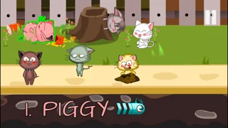
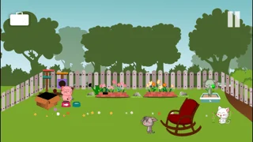

Cats in the Box Adventure


Notes et avis des boutiques
Google Play
4.4
1K+
Voir la fiche et les avisApp Store
3.0
Voir la fiche et les avisNotes affichées séparément par boutique. Elles peuvent varier selon le pays et évoluer.
L’aventure
Piggy, Rocky, Sleepy, Milly, Cranky et Crazzy ont chacun leur propre aventure. Découvrez six histoires, des personnalités différentes et des scènes colorées remplies d’énigmes.
Examinez les décors, collectez les objets et trouvez comment les utiliser pour aider les chatons. Cats in the Box Adventure se joue hors ligne et sans publicité. Une aide interactive, une page dédiée et des vidéos pour chaque chat sont disponibles si vous êtes bloqué.
Au fil du jeu
6 chatons, 6 histoires
Chaque chaton a son caractère, ses énigmes et son aventure dédiée.
Toucher pour jouer
Inventaire simple, interactions tactiles, objets combinables.

Besoin d’aide ?
Des vidéos pas-à-pas sont disponibles si vous êtes bloqué.
